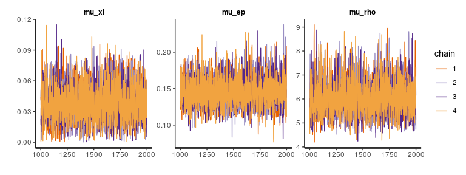
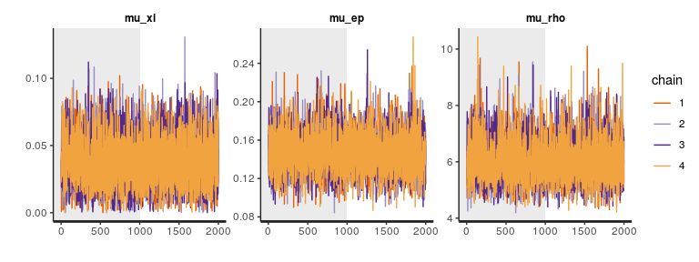
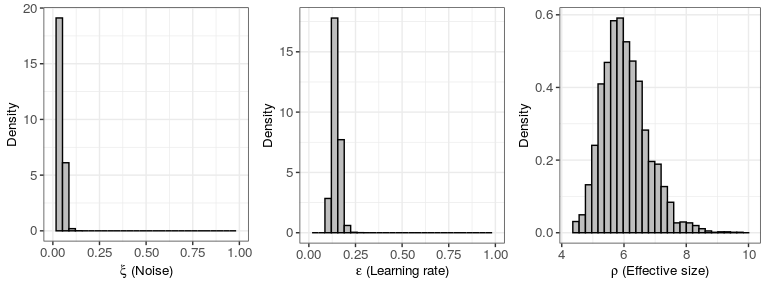
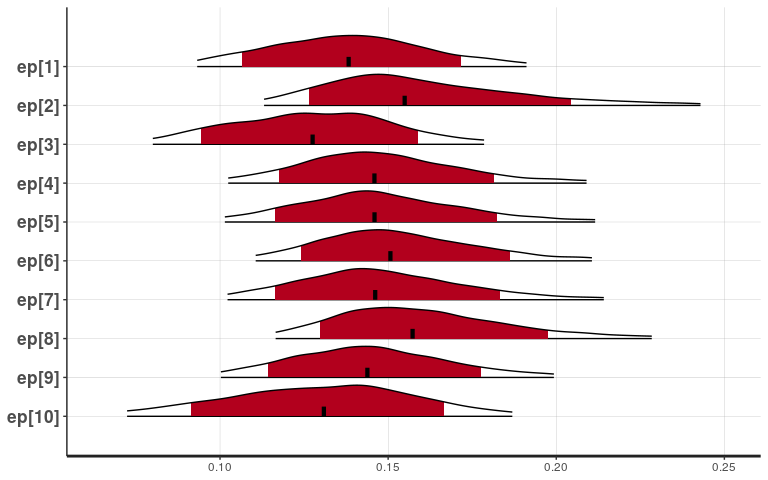
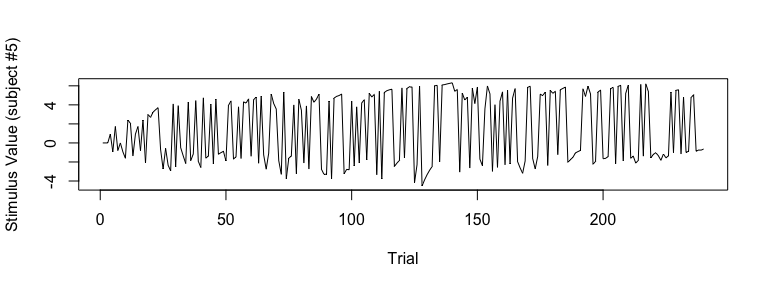

hBayesDM (hierarchical Bayesian modeling of Decision-Making tasks) is a user-friendly R package that offers hierarchical Bayesian analysis of various computational models on an array of decision-making tasks. Click here to download its help file (reference manual). Click here to read our paper published in Computational Psychiatry. Click here to download a poster we presented at several conferences/meetings. You can find hBayesDM on CRAN and GitHub.
Motivation
Computational modeling provides a quantitative framework for investigating latent neurocognitive processes (e.g., learning rate, reward sensitivity) and interactions among multiple decision-making systems. Parameters of a computational model reflect psychologically meaningful individual differences: thus, getting accurate parameter estimates of a computational model is critical to improving the interpretation of its findings. Hierarchical Bayesian analysis (HBA) is regarded as the gold standard for parameter estimation, especially when the amount of information from each participant is small (see below “Why hierarchical Bayesian analysis?”). However, many researchers interested in HBA often find the approach too technical and challenging to be implemented.
We introduce a free R package hBayesDM, which offers HBA of various computational models on an array of decision-making tasks (see below for a list of tasks and models currently available). Users can perform HBA of various computational models with a single line of coding. Example datasets are also available. With hBayesDM, we hope anyone with minimal knowledge of programming can take advantage of advanced computational modeling and HBA. It is our expectation that hBayesDM will contribute to the dissemination of these computational tools and enable researchers in related fields to easily characterize latent neurocognitive processes within their study populations.
Why hierarchical Bayesian analysis (HBA)?

Most computational models do not have closed form solutions and we need to estimate parameter values. Traditionally parameters are estimated at the individual level with maximum likelihood estimation (MLE): getting point estimates for each individual separately. However, individual MLE estimates are often noisy especially when there is insufficient amount of data. A group-level analysis (e.g., group-level MLE), which estimate a single set of parameters for the whole group of individuals, may generate more reliable estimates but inevitably ignores individual differences.
HBA and other hierarchical approaches (e.g., Huys et al., 2011) allow for individual differences while pooling information across individuals. Both individual and group parameter estimates (i.e., posterior distributions) are estimated simultaneously in a mutually constraining fashion. Consequently, individual parameter estimates tend to be more stable and reliable because commonalities among individuals are captured and informed by the group tendencies (e.g., Ahn et al., 2011). HBA also finds full posterior distributions instead of point estimates (thus providing rich information about the parameters). HBA also makes it easy to do group comparisons in a Bayesian fashion (e.g., comparing clinical and non-clinical groups, see an example below).
HBA is a branch of Bayesian statistics and the conceptual framework of Bayesian data analysis is clearly written in Chapter 2 of John Kruschke’s book (Kruschke, 2014). In Bayesian statistics, we assume prior beliefs (i.e., prior distributions) for model parameters and update the priors into posterior distributions given the data (e.g., trial-by-trial choices and outcomes) using Bayes’ rule. Note that the prior distributions we use for model parameters are vague (e.g., flat) or weakly informative priors, so they play a minimal role in the posterior distribution.
For Bayesian updating, we use the Stan software package (http://mc-stan.org/), which implements a very efficient Markov Chain Monte Carlo (MCMC) algorithm called Hamiltonian Monte Carlo (HMC). HMC is known to be effective and works well even for large complex models. See Stan reference manual (http://mc-stan.org/documentation/) and Chapter 14 of Kruschke (2014) for a comprehensive description of HMC and Stan. What is MCMC and why shoud we use it? Remember, we need to update our priors into posterior distributions in order to make inference about model parameters. Simply put, MCMC is a way of approximating a posterior distribution by drawing a large number of samples from it. MCMC algorithms are used when posterior distributions cannot be analytically achieved or using MCMC is more efficient than searching for the whole grid of parameter space (i.e., grid search). To learn more about the basic foundations of MCMC, we recommend Chapter 7 of Kruschke (2014).
Detailed specification of Bayesian models is not available in text yet (stay tuned for our tutorial paper whose citation is listed below). At the same time, users can go over our Stan codes to check how we implement each computational model (e.g., pathTo_gng_m1 = system.file("stan/gng_m1.stan", package="hBayesDM") ). We made strong efforts to optimize Stan codes through reparameterization (e.g., Matt trick) and vectorization.
Prerequisites
- R version 3.4.0 or later is required. R is freely available from http://www.r-project.org/.
- Latest Stan (RStan 2.18.1 or later). Detailed instructions for installing RStan is available in this link: https://github.com/stan-dev/rstan/wiki/RStan-Getting-Started/.
- RStudio (https://www.rstudio.com/products/RStudio/) is not required but strongly recommended.
Note: Additional R packages (e.g., ggplot2, loo) will be installed (if not installed yet) during the installation of hBayesDM.
Tasks & models implemented in hBayesDM
See here for the list of tasks and models implemented in hBayesDM.
How to install hBayesDM
There are three ways to install hBayesDM as described below. Make sure to install RStan prior to install hBayesDM. And restart R/RStudio after the installation of hBayesDM. Typically RStan can be installed just by typing install.packages("rstan", dependencies = TRUE). For Windows, you need to install Rtools first to install RStan and install the hBayesDM from CRAN. For detailed instructions for the installation of rstan, please go to this link: https://github.com/stan-dev/rstan/wiki/RStan-Getting-Started. If you are a Mac user, make sure Xcode is installed.
How can you tell if RStan is correctly installed? Check if you can fit the ‘Eight Schools’ model without a problem. Check here or here if you experience difficulty installing RStan.
Method C
- Download a copy from here to a directory (e.g., “~/Downloads”).
- Open R(Studio) and set working directory to the downloaded folder. (e.g.,
setwd("~/Downloads")) - Install the package from the downloaded file.
Precompiling Stan models during installation
If you follow the direction described below, Stan models will be precompiled during installation and models will run immediately when called. This is recommended if you are a frequent hBayesDM user!
Sys.setenv(BUILD_ALL='true') # Build all the models on installation
Sys.setenv(MAKEFLAGS='-j 4') # Use 4 cores for compilation (or the number you want)
install.packages("hBayesDM") # Install from CRAN
## or
devtools::install_github("CCS-Lab/hBayesDM") # Install from GitHubWe highly recommend you use multiple cores for compiling, since it will take quite a long time to complete.
How to use hBayesDM
First, open RStudio (or just R) and load the package:
Four steps of doing HBA with hBayesDM are illustrated below. As an example, four models of the orthogonalized Go/Nogo task (Guitart-Masip et al., 2012; Cavanagh et al., 2013) are fit and compared with the hBayesDM package.

1) Prepare the data
- For fitting a model with hBayesDM, all subjects’ data should be combined into a single text (*.txt) file. Look at the sample dataset and a help file (e.g.,
?gng_m1) for each task and carefully follow the instructions. - Subjects’ data must contain variables that are consistent with the column names specified in the help file, though extra variables are in practice allowed.
- It is okay if the number of trials is different across subjects. But there should exist no N/A data. If some trials contain N/A data (e.g.,
choice=NAin trial#10), remove the trials first. - Sample data are available here, although users can fit a model with sample data without separately downloading them with one of the function arguments. Once the hBayesDM package is installed, sample data can be also retrieved from the package folder. Note that the file name of sample (example) data for a given task is taskName_exampleData.txt (e.g., dd_exampleData.txt, igt_exampleData.txt, gng_exampleData.txt, etc.). See each model’s help file (e.g.,
?gng_m1) to check required data columns and their labels.
If you download the sample data to “~/Downloads”, you may specify the path to the data file like this:
2) Fit candidate models
Below the gng_m1 model is fit with its sample data. The command indicates that three MCMC chains are run and three cores are used for parallel computing. If you enter “example” as an argument for data, hBayesDM will use the sample data for the task. Note that you can save the output to a file (see the saveDir argument) or send an email when fitting is complete (see the email argument). You can also assign your own initial values (see the inits argument; e.g., inits=c(0.1, 0.2, 1.0)):
, which is the same as the command below because the default numbers of total (including warmup) iterations (MCMC samples), warmup iterations, and chains are 2,000, 1,000, and 4 for gng models.
##
## Model name = gng_m1
## Data file = example
##
## Details:
## # of chains = 4
## # of cores used = 4
## # of MCMC samples (per chain) = 2000
## # of burn-in samples = 1000
## # of subjects = 10
## # of (max) trials per subject = 240
##
##
## ****************************************
## ** Use VB estimates as initial values **
## ****************************************
## Chain 1: ------------------------------------------------------------
## Chain 1: EXPERIMENTAL ALGORITHM:
## Chain 1: This procedure has not been thoroughly tested and may be unstable
## Chain 1: or buggy. The interface is subject to change.
## Chain 1: ------------------------------------------------------------
## Chain 1:
## Chain 1:
## Chain 1:
## Chain 1: Gradient evaluation took 0.001829 seconds
## Chain 1: 1000 transitions using 10 leapfrog steps per transition would take 18.29 seconds.
## Chain 1: Adjust your expectations accordingly!
## Chain 1:
## Chain 1:
## Chain 1: Begin eta adaptation.
## Chain 1: Iteration: 1 / 250 [ 0%] (Adaptation)
## Chain 1: Iteration: 50 / 250 [ 20%] (Adaptation)
## Chain 1: Iteration: 100 / 250 [ 40%] (Adaptation)
## Chain 1: Iteration: 150 / 250 [ 60%] (Adaptation)
## Chain 1: Iteration: 200 / 250 [ 80%] (Adaptation)
## Chain 1: Success! Found best value [eta = 1] earlier than expected.
## Chain 1:
## Chain 1: Begin stochastic gradient ascent.
## Chain 1: iter ELBO delta_ELBO_mean delta_ELBO_med notes
## Chain 1: 100 -820.269 1.000 1.000
## Chain 1: 200 -810.308 0.506 1.000
## Chain 1: 300 -815.111 0.339 0.012
## Chain 1: 400 -809.368 0.256 0.012
## Chain 1: 500 -809.646 0.205 0.007 MEDIAN ELBO CONVERGED
## Chain 1:
## Chain 1: Drawing a sample of size 1000 from the approximate posterior...
## Chain 1: COMPLETED.## Warning: Pareto k diagnostic value is 1.25. Resampling is disabled.
## Decreasing tol_rel_obj may help if variational algorithm has terminated
## prematurely. Otherwise consider using sampling instead.##
## ************************************
## **** Model fitting is complete! ****
## ************************************Executing the command will generate messages like below in the R console. It will take approximately 2~3 minutes (with the gng_m1 model & “example” data) for the model fitting to complete (with MCMC sampling). Note that you may get warning messages about “numerical problems” or that there are a certain number of “divergent transitions after warmup”. When we check our models with example datasets, warning messages appear mostly at the beginning of the warmup period and there are very few divergent transitions after warmup. In such cases, you can ignore the warnings. Also see Appendix D of the Stan Reference Manual.
Model name = gng_m1
Data file = example
Details:
# of chains = 4
# of cores used = 4
# of MCMC samples (per chain) = 2000
# of burn-in samples = 1000
# of subjects = 10
# of (max) trials per subject = 240
****************************************
** Use VB estimates as initial values **
****************************************
***********************************
** Loading a precompiled model **
***********************************
starting worker pid=75130 on localhost:11950 at 08:25:48.905
starting worker pid=75138 on localhost:11950 at 08:25:49.101
SAMPLING FOR MODEL 'gng_m1' NOW (CHAIN 1).
Chain 1, Iteration: 1 / 2000 [ 0%] (Warmup)
SAMPLING FOR MODEL 'gng_m1' NOW (CHAIN 2).
...When model fitting is complete, you see this message and data are stored into output1.
************************************
**** Model fitting is complete! ****
************************************output1, a hBayesDM object, is a list with 4 elements (class: “hBayesDM”):
-
model: Name of the fitted model (i.e.,output1$modelis ‘gng_m1’). -
allIndPars: Summary of individual subjects’ parameters (default: mean). Users can also choose to use median or mode (e.g.,output1 = gng_m1("example", indPars="mode")). -
parVals: Posterior samples of all parameters. Extracted byrstan::extract(rstan_object, permuted=T). Note that hyper (group) mean parameters are indicated bymu_PARAMETER(e.g.,mu_xi,mu_ep,mu_rho). -
fit: RStan object (i.e.,fit = stan(file='gng_m1.stan', ...)). -
rawdata: Raw trial-by-trial data used for modeling. Raw data are provided in the output to allow users to easily access data and compare trial-by-trial model-based regressors (e.g., prediction errors) with choice data. -
modelRegressor(optional): Trial-by-trial model-based regressors such as prediction errors, the values of the chosen option, etc. For each model, we pre-select appropriate model-based regressors.
> output1$allIndPars
xi ep rho subjID
1 0.03688558 0.1397615 5.902901 1
2 0.02934812 0.1653435 6.066120 2
3 0.04467025 0.1268796 5.898099 3
4 0.02103926 0.1499842 6.185020 4
5 0.02620808 0.1498962 6.081908 5
...> output1$fit
Inference for Stan model: gng_m1.
4 chains, each with iter=2000; warmup=1000; thin=1;
post-warmup draws per chain=4000, total post-warmup draws=4000.
mean se_mean sd 2.5% 25% 50% 75% 97.5% n_eff Rhat
mu_xi 0.03 0.00 0.02 0.00 0.02 0.03 0.05 0.08 2316 1.00
mu_ep 0.15 0.00 0.02 0.11 0.13 0.15 0.16 0.19 4402 1.00
mu_rho 5.97 0.01 0.72 4.76 5.45 5.89 6.40 7.61 3821 1.00
sigma[1] 0.54 0.06 1.02 0.02 0.18 0.35 0.61 1.99 318 1.01
sigma[2] 0.12 0.00 0.08 0.01 0.05 0.10 0.16 0.31 2620 1.00
sigma[3] 0.12 0.00 0.09 0.01 0.05 0.10 0.16 0.33 2402 1.00
...\(\hat{R}\) (Rhat) is an index of the convergence of the chains. \(\hat{R}\) values close to 1.00 would indicate that MCMC chains are converged to stationary target distributions. When we check MCMC performance of our models on sample data, \(\hat{R}\) values are 1.00 for most parameters or at most 1.04.
3) Plot model parameters
Make sure to visually diagnose MCMC performance (i.e., visually check whether MCMC samples are well mixed and converged to stationary distributions). For the diagnosis or visualization of hyper (group) parameters, you can use plot.hBayesDM or just plot, which searches for an extension function that contains the class name. The class of any hBayesDM output is hBayesDM:
Let’s first visually diagnose MCMC performance of hyper parameters with trace plots:

The trace plots indicate that MCMC samples are indeed well mixed and converged, which is consistent with their \(\hat{R}\) values (see here for some discussion on why we care about mixing). Note that the plots above exclude burn-in samples. If you want, you can include burn-in (warmup) MCMC samples.

You can also plot the posterior distributions of the hyper (group) parameters with plot:

To visualize individual parameters, you can use our newly updated function called plotInd (based on Stan’s native function stan_plot). For example, to plot each individual’s \(\epsilon\) (learning rate) parameter (e.g., individual posterior distributions):

4) Compare models (and groups)
To compare models, you first fit all models in the same manner as the example above (e.g., outpu4 = gng_m4("example", niter=2000, nwarmup=1000, nchain=4, ncore=4) ). Next, we use the command printFit, which is a convenient way to summarize Leave-One-Out Information Criterion (LOOIC) or Widely Applicable Information Criterion (WAIC) of all models we consider (see Vehtari et al. (2015) for the details of LOOIC and WAIC). By default, printFit function uses the LOOIC which is preferable to the WAIC when there are influential observations (Vehtari et al., 2015).
Assuming four models’ outputs are output1 (gng_m1), output2 (gng_m2), output3 (gng_m3), and output4 (gng_m4), their model fits can be simultaneously summarized by:
> printFit(output1, output2, output3, output4)
Model LOOIC
1 gng_m1 1588.843
2 gng_m2 1571.129
3 gng_m3 1573.872
4 gng_m4 1543.335 Note that the lower LOOIC is, the better its model-fit is. Thus, model#4 has the best LOOIC compared to other models. Users can print WAIC or both by calling printFit(output1, output2, output3, output4, ic="waic") or printFit(output1, output2, output3, output4, ic="both"). Use the extract_ic function (e.g., extract_ic(output3) ) if you want more detailed information including standard errors and expected log pointwise predictive density (elpd). Note that the extract_ic function can be used only for a single model output.
We also want to remind you that there are multiple ways to compare computational models (e.g., simulation method (absolute model performance), parameter recovery, generalization criterion) and the goodness of fit (e.g., LOOIC or WAIC) is just one of them. Check if predictions from your model (e.g., “posterior predictive check”) can mimic the data (same data or new data) with reasonable accuracy. See Kruschke (2014) (for posterior predictive check), Guitart-Masip et al. (2012) (for goodness of fit and simulation performance on the orthogonalized Go/Nogo task), and Busemeyer & Wang (2000) (for generalization criterion) as well as Ahn et al. (2008; 2014) and Steingroever et al. (2014) (for the combination of multiple model comparison methods).
To compare two groups in a Bayesian fashion (e.g., Ahn et al., 2014), first you need to fit each group with the same model and ideally the same number of MCMC samples. For example,
data_group1 = "~/Project_folder/gng_data_group1.txt" # data file for group1
data_group2 = "~/Project_folder/gng_data_group2.txt" # data file for group2
output_group1 = gng_m4(data_group1) # fit group1 data with the gng_m4 model
output_group2 = gng_m4(data_group2) # fit group2 data with the gng_m4 model
## After model fitting is complete for both groups,
## evaluate the group difference (e.g., on the 'pi' parameter) by examining the posterior distribution of group mean differences.
diffDist = output_group1$parVals$mu_pi - output_group2$parVals$mu_pi # group1 - group2
HDIofMCMC( diffDist ) # Compute the 95% Highest Density Interval (HDI).
plotHDI( diffDist ) # plot the group mean differences5) Extracting trial-by-trial regressors for model-based fMRI/EEG analysis
In model-based neuroimaging (e.g., O’Doherty et al., 2007), model-based time series of a latent cognitive process are generated by computational models, and then time series data are convolved with a hemodynamic response function and regressed again fMRI or EEG data. This model-based neuroimaging approach has been particularly popular in cognitive neuroscience.
The biggest challenge for performing model-based fMRI/EEG is to learn how to extract trial-by-trial model-based regressors. The hBayesDM package allows users to easily extract model-based regressors that can be used for model-based fMRI or EEG analysis. The hBayesDM package currently provides the following model-based regressors. With the trial-by-trial regressors, users can easily use their favorite neuroimaging package (e.g., in Statistical Parametric Mapping (SPM; http://www.fil.ion.ucl.ac.uk/spm/) to perform model-based fMRI analysis. See our paper (Extracting Trial-by-Trial Regressors for Model-Based fMRI/EEG Analysis) for more details.
As an example, if you would like to extract trial-by-trial stimulus values (i.e., expected value of stimulus on each trial), first fit a model like the follwoing (set the modelRegressor input variable to TRUE. Its default value is FALSE):
## fit example data with the gng_m3 model
output3 = gng_m3(data="example", niter=2000, nwarmup=1000, modelRegressor=TRUE)##
## Model name = gng_m3
## Data file = example
##
## Details:
## # of chains = 4
## # of cores used = 4
## # of MCMC samples (per chain) = 2000
## # of burn-in samples = 1000
## # of subjects = 10
## # of (max) trials per subject = 240
##
## **************************************
## ** Extract model-based regressors **
## **************************************
##
##
## ****************************************
## ** Use VB estimates as initial values **
## ****************************************
## Chain 1: ------------------------------------------------------------
## Chain 1: EXPERIMENTAL ALGORITHM:
## Chain 1: This procedure has not been thoroughly tested and may be unstable
## Chain 1: or buggy. The interface is subject to change.
## Chain 1: ------------------------------------------------------------
## Chain 1:
## Chain 1:
## Chain 1:
## Chain 1: Gradient evaluation took 0.00253 seconds
## Chain 1: 1000 transitions using 10 leapfrog steps per transition would take 25.3 seconds.
## Chain 1: Adjust your expectations accordingly!
## Chain 1:
## Chain 1:
## Chain 1: Begin eta adaptation.
## Chain 1: Iteration: 1 / 250 [ 0%] (Adaptation)
## Chain 1: Iteration: 50 / 250 [ 20%] (Adaptation)
## Chain 1: Iteration: 100 / 250 [ 40%] (Adaptation)
## Chain 1: Iteration: 150 / 250 [ 60%] (Adaptation)
## Chain 1: Iteration: 200 / 250 [ 80%] (Adaptation)
## Chain 1: Success! Found best value [eta = 1] earlier than expected.
## Chain 1:
## Chain 1: Begin stochastic gradient ascent.
## Chain 1: iter ELBO delta_ELBO_mean delta_ELBO_med notes
## Chain 1: 100 -823.918 1.000 1.000
## Chain 1: 200 -826.958 0.502 1.000
## Chain 1: 300 -814.838 0.340 0.015
## Chain 1: 400 -818.443 0.256 0.015
## Chain 1: 500 -817.985 0.205 0.004 MEDIAN ELBO CONVERGED
## Chain 1:
## Chain 1: Drawing a sample of size 1000 from the approximate posterior...
## Chain 1: COMPLETED.## Warning: Pareto k diagnostic value is 1.14. Resampling is disabled.
## Decreasing tol_rel_obj may help if variational algorithm has terminated
## prematurely. Otherwise consider using sampling instead.##
## ************************************
## **** Model fitting is complete! ****
## ************************************Once the sampling is completed, all model-based regressors are contained in the modelRegressor list.
## store all subjects' stimulus value (SV) in ‘sv_all’
sv_all = output3$modelRegressor$SV
dim(output3$modelRegressor$SV) # number of rows=# of subjects (=10), number of columns=# of trials (=240)## [1] 10 240## visualize SV (Subject #1)
plot(sv_all[1, ], type="l", xlab="Trial", ylab="Stimulus Value (subject #1)") 
## visualize SV (Subject #5)
plot(sv_all[5, ], type="l", xlab="Trial", ylab="Stimulus Value (subject #5)") 
Similarly, users can extract and visualize other model-based regressors. W(Go), W(NoGo), Q(Go), Q(NoGo) are stored in Wgo, Wnogo, Qgo, and Qnogo, respectively.
6) Variational inference for approximate posterior sampling
To use Stan’s variational algorithm for approximate posterior sampling in hBayesDM, users just need to set vb=TRUE (default = FALSE). It takes very little time (especially with precompiled models) to do variational inference - try it yourself for any model!! But variational inference should be used only to get a rough estimate. It is recommended that users use MCMC for final inferences.
For example, to run gng_m1 using variational inference:
Note that input arguments for MCMC sampling (e.g., nchain, niter, nthin, nwarmup) are not specified here. ?rstan::vb for more details.
7) Posterior predictive checks
Simply put, posterior predictive checks refer to when a fitted model is used to generate simulated data and check if simulated data are similar to the actual data. Posterior predictive checks are useful in assessing if a model generates valid predictions.
From v0.5.0, users can run posterior predictive checks on all models except drift-diffusion models in hBayesDM. Simulated data from posterior predictive checks are contained in hBayesDM_OUTPUT$parVals$y_pred. In a future release, we will include a function/command that can conveniently summarize and plot posterior predictive checks. In the mean time, users can program their own codes like the following:
## fit example data with the gng_m3 model and run posterior predictive checks
x = gng_m3(data="example", niter=2000, nwarmup=1000, nchain=4, ncore=4, inc_postpred = TRUE)
## dimension of x$parVals$y_pred
dim(x$parVals$y_pred) # y_pred --> 4000 (MCMC samples) x 10 (subjects) x 240 (trials)
[1] 4000 10 240
y_pred_mean = apply(x$parVals$y_pred, c(2,3), mean) # average of 4000 MCMC samples
dim(y_pred_mean) # y_pred_mean --> 10 (subjects) x 240 (trials)
[1] 10 240
numSubjs = dim(x$allIndPars)[1] # number of subjects
subjList = unique(x$rawdata$subjID) # list of subject IDs
maxT = max(table(x$rawdata$subjID)) # maximum number of trials
true_y = array(NA, c(numSubjs, maxT)) # true data (`true_y`)
## true data for each subject
for (i in 1:numSubjs) {
tmpID = subjList[i]
tmpData = subset(x$rawdata, subjID == tmpID)
true_y[i, ] = tmpData$keyPressed # only for data with a 'choice' column
}
## Subject #1
plot(true_y[1, ], type="l", xlab="Trial", ylab="Choice (0 or 1)", yaxt="n")
lines(y_pred_mean[1,], col="red", lty=2)
axis(side=2, at = c(0,1) )
legend("bottomleft", legend=c("True", "PPC"), col=c("black", "red"), lty=1:2)
To-do list
We are planning to add more tasks/models. We plan to include the following tasks and/or models in the near future. If you have any requests for a specific task or a model, please let us know.
- Hierarchical Gaussian Filtering (Mathys et al., 2011).
- More sequential sampling models (e.g., drift diffusion models with different drift rates for multiple conditions).
- Models for the passive avoidance learning task (Newman & Kosson, 1986; Newman et al., 1985).
- Models for the Stop Signal Task (SST)
- Allowing users to extract model-based regressors (O’Doherty et al., 2007) from more tasks.
Citation
If you used hBayesDM or some of its codes for your research, please cite this paper:
@article{hBayesDM,
title = {Revealing Neurocomputational Mechanisms of Reinforcement Learning and Decision-Making With the {hBayesDM} Package},
author = {Ahn, Woo-Young and Haines, Nathaniel and Zhang, Lei},
journal = {Computational Psychiatry},
year = {2017},
volume = {1},
pages = {24--57},
publisher = {MIT Press},
url = {doi:10.1162/CPSY_a_00002},
}Papers citing hBayesDM
Here is a selected list of papers being we know that used or cited hBayesDM (from Google Scholar). Let us know if you used hBayesDM for your papers!
Suggested reading
You can refer to other helpful review papers or books (Busemeyer & Diederich, 2010; Daw, 2011; Lee, 2011; Lee & Wagenmakers, 2014; Shiffrin et al., 2008) to know more about HBA or computational modeling in general.
Other Useful Links
- “Modelling behavioural data” by Quentin Huys, available in https://www.quentinhuys.com/teaching.html.
- Introductory tutorial on reinforcment learning by Jill O’Reilly and Hanneke den Ouden, available in http://hannekedenouden.ruhosting.nl/RLtutorial/Instructions.html.
- VBA Toolbox: A flexible modeling (MATLAB) toolbox using Variational Bayes (http://mbb-team.github.io/VBA-toolbox/).
- TAPAS: A collection of algorithms and software tools written in MATLAB. Developed by the Translational Neuromodeling Unit (TNU) at Zurich (http://www.translationalneuromodeling.org/tapas/).
- Bayesian analysis toolbox for delay discounting data, available in http://www.inferencelab.com/delay-discounting-analysis/.
- rtdists: Response time distributions in R, available in https://github.com/rtdists/rtdists/.
- RWiener: Wiener process distribution functions, available in https://cran.r-project.org/web/packages/RWiener/index.html.
Acknoledgement
This work was supported in part by the National Institute on Drug Abuse (NIDA) under award number R01DA021421 (PI: Jasmin Vassileva).
References
Ahn, W.-Y., Krawitz, A., Kim, W., Busemeyer, J. R., & Brown, J. W. (2011). A model-based fMRI analysis with hierarchical bayesian parameter estimation. Journal of Neuroscience, Psychology, and Economics, 4(2), 95.
Ahn, W.-Y., Vasilev, G., Lee, S.-H., Busemeyer, J. R., Kruschke, J. K., Bechara, A., & Vassileva, J. (2014). Decision-making in stimulant and opiate addicts in protracted abstinence: Evidence from computational modeling with pure users. Frontiers in Psychology, 5, 849.
Busemeyer, J. R., & Diederich, A. (2010). Cognitive modeling. Sage Publications, Inc.
Busemeyer, J. R., & Wang, Y.-M. (2000). Model comparisons and model selections based on generalization criterion methodology. Journal of Mathematical Psychology, 44, 171–189.
Daw, N. D. (2011). Trial-by-trial data analysis using computational models. Decision Making, Affect, and Learning: Attention and Performance XXIII, 23, 3–38.
Huys, Q. J. M., Cools, R., Gölzer, M., Friedel, E., Heinz, A., Dolan, R. J., & Dayan, P. (2011). Disentangling the roles of approach, activation and valence in instrumental and pavlovian responding. PLoS Computational Biology, 7(4), e1002028.
Kruschke, J. (2014). Doing bayesian data analysis: A tutorial with R, JAGS, and Stan. Academic Press.
Lee, M. D. (2011). How cognitive modeling can benefit from hierarchical bayesian models. Journal of Mathematical Psychology, 55(1), 1–7.
Lee, M. D., & Wagenmakers, E.-J. (2014). Bayesian cognitive modeling: A practical course. Cambridge University Press.
Mathys, C., Daunizeau, J., Friston, K. J., & Stephan, K. E. (2011). A bayesian foundation for individual learning under uncertainty. Frontiers in Human Neuroscience, 5, 39.
Newman, J. P., & Kosson, D. S. (1986). Passive avoidance learning in psychopathic and nonpsychopathic offenders. Journal of Abnormal Psychology, 95(3), 252.
Newman, J. P., Widom, C. S., & Nathan, S. (1985). Passive avoidance in syndromes of disinhibition, psychopathy, and extraversion. Journal of Personality and Individual Differences, 48, 1316–1327.
O’Doherty, J. P., Hampton, A., & Kim, H. (2007). Model-based fMRI and its application to reward learning and decision making. Annals of the New York Academy of Sciences, 1104(1), 35–53.
Shiffrin, R., Lee, M. D., Kim, W., & Wagenmakers, E. (2008). A survey of model evaluation approaches with a tutorial on hierarchical Bayesian methods. Cognitive Science: A Multidisciplinary Journal, 32(8), 1248–1284.
Steingroever, H., Wetzels, R., & Wagenmakers, E.-J. (2014). Absolute performance of reinforcement-learning models for the iowa gambling task. Decision, 1(3), 161.
Vehtari, A., Gelman, A., & Gabry, J. (2015). Efficient implementation of leave-one-out cross-validation and WAIC for evaluating fitted Bayesian models. arXiv Preprint arXiv:1507.04544.